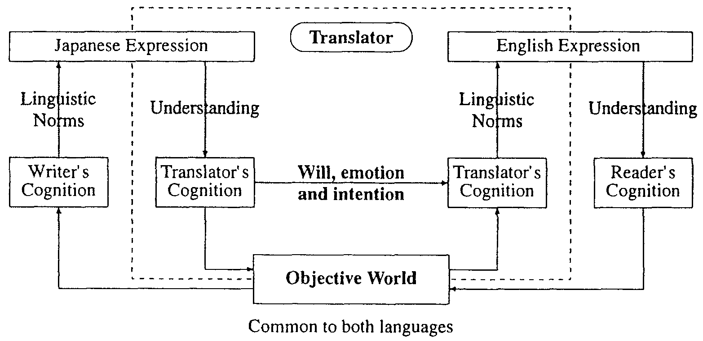
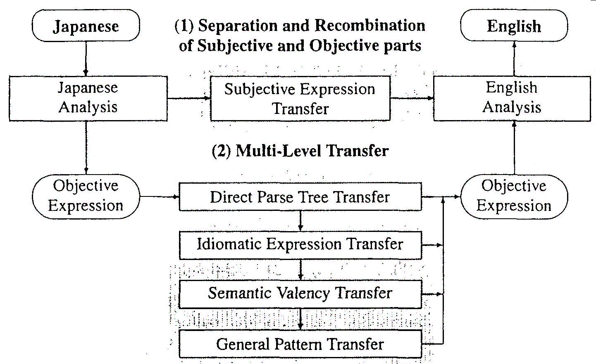

This paper outlines our approach to disambiguation in our Japanese-to-English system. First, it briefly shows the design concept of the Multi-Level Translation Method and discusses the necessity of semantic analysis in implementing this method. Second, it introduces our two approaches involving semantic analysis for disnmbiguation. Then it discusses semantic analysis and introduces the outline of our semantic dictionary prepared for semantic analysis, together with their effects on disambiguation. And finally, the paper outlines our plans to tackle problems which still remain.
Japanese-to-English Machine Translation, Constructive Process Theory, Disambiguation, Linguistic Knowledge, Semantic Dictionaries
NTT Communication Science laboratories have been developing a machine translation system called ALT-J/E, the Automatic Language Translator - Japanese to English, for more than ten years (Ikehara et al. 1987; Ikehara et al. 1991). The aim is to produce a high quality machine translation system that can be used to facilitate communication via machine translation. To develop this system, we have proposed the Multi-Level Translation Method based on the Constructive Process Theory suggested by Tokieda (1941), a famous Japanese linguist, some 50 years ago. This Multi-Level Translation Method enables us to overcome the limitations of the convcntional translation methods based on compositional semantics.
Let us consider the process of human translation from Japanese to English. When linguistic expressions are given to a translator, what do they understand, and how do they do so? There are two kinds of information which are combined to produce linguistic expressions. One is the shape of objects that are recognized thorough the writer's eyes. The other is the writer's judgments, emotions, will and intention concerning the objects. These are combined to generate expressions using the linguistic norms of the writer's language. From this information, the translator understands the shape of the objects and the writer's mind. In our system, this is done in the framework of the Japanese language.
After thinking within the writer's world, the translator will switch his mind to the framework of the English language and reconstruct what he understood. The text is then available to be read by an English reader. This process is shown in Figure 1. In this process, only the object is common to the English and Japanese language. The writer's emotion, intention and will must be understood by the translator. The way to see and how to think is diffcrent between two languages. The translator needs to change their way of thinking to make a good translation. This process is simulated in our machine translation method.
|
 |
Figure 2 shows the outline of the MuIti-LeveI Translation Method. It clearly shows the similarity between this method and the actions of the human translator (the dashed box in Figure 1).
|
 |
The Multi-Level Translation Method is based on the two ideas outlined above. The first is the separation and synthesis of subjective expressions. It was pointed out in Constructive Process Theory (Miura 1967) that Japanese expressions are composed of Subjective Expressions and Objective Exprcssions. Here, Objective Expressions express conceptualized objects. On the other hand, Subjective Expressions express the speaker's unconceptualized emotion and intention. Two hundred years ago, the same relationship had been found in the Port Royal Grammar (Lancelot and Arnauld 1972) but it seems forgotten now. We do not know of any other example of this idea being applied to natural language processing. The separation of Objective and Subjective expressions was first trialled and then implemented in our system.
The second part of our method aims to overcome the limitations of conventional Compositional Semantics. In natural languages, not only every word in a sentence but also the structures of expressions have meanings. If sentences are separated into small elements such as words, the total meanings tend to be lost. So, our method finds the expression units in sentences which have fixed meanings and cannot be separated any more without losing their meanings. And it translates them from larger units to smaller ones. Until 1995 there were three levels: Idiomatic Expression Transfer, Semantic Valency Transfer and General Pattern Transfer. In 1995 we added Direct Parsc Tree Transfer, to handle translations of units larger than verb case frames (Matsuo et al. 1994). We are planning to add more translation steps within the Multi-LeveI Transfer framework, such as example-based transfer (Shirai et al. 1996a; Shirai et al. 1996b).
It is very difficult to find these units of structural meaning in actual sentences. Every expression needs to be judged as to whether it can be separated into smaller pieces or not, without losing its meaning. We think that semantic analysis techniques play a very important role in this process and it is impossible to develop this method without developing a full scale semantic analysis of the Japanese written language.
Therefore, this system is based upon semantic analysis techniques. Semantic analysis is one of the major means for resolving semantic ambiguities, but as we used it, we discovered that it is also a powerful means to resolve the ambiguities which appear in morphological analysis and syntactic analysis (Miyazaki et al. 1983).
In order to realize semantic analysis we have been developing a full-size semantic knowledge system. This is realized as the Semantic Dictionaries, which we have been developing for as long as we have been developing ALT-J/E. Many kinds of functions including semantic analysis have already been realized using this dictionary.
| |||||||||||
Many kinds of ambiguities arise in natural language processing. We believe that how to resolve them is the most important and urgent issue we need to come to grips with before we can develop fully workable systems.
In the past, many language models and their processing models have been proposed and their elegance and completeness have been discussed. However these models did not focus on major problems in actual systems. If these models are not applicable to actual languages, they remain merely intellectual pastimes and of little relevance to machine translation. Normally, ambiguities do not arise where there is sufficient information. They occur only when there is insufficient information or knowledge to solve them. We believe that there is no way to resolve them without obtaining the necessary information from the actual expressions or, if it is not possible, supplying suitable information from outside.
The two most important actions to be carried out are: first, to classify the ambiguities and investigate their features; and second, to clarify the information and knowledge which are necessary to resolve each of them.
If we consider how we can get the information to resolve tbe ambiguities, we will find the following two important points. First, actual language expressions have much information, even at lexical or syntactic levels, that has not yet been utilized by most natural language processing systems. Every word and every expression has much information based on its own history. The information which is useful for disambiguation should be clarified and entered into dictionaries. This is a slow and labor-intensive process, but the results are cumulative. It should only need to be done once, and shonld then be available for aIl further processing.
The second point is about semantic information. There have been many discussions concerning semantic analysis (Winograd 1972, Shank and Riesbeck 1981). However, up to now, no large scale semantic dictionary has yet been produced. Without this kind of dictionary, any proposal or discussion cannot be made definite. In order to realize an actual semantic analysis, an actual semantic dictionary needs to be developed. With these points in mind, two kinds of linguistic knowledge systems have been developed: syntactic and semantic.
The first is a syntactic knowledge system for Japanese. In this system, Japanese syntactic categories of words are classified into more than 300 types (Miyazaki et al. 1995). In addition, 100 to 300 lexical features are registered for every word in a word dictionary composed of 400,000 words. The knowledge registered in this dictionary has enabled us to write a very accurate morphological analysis program, with a current accuracy of 99.8% for every word. The accuracy of Japanese morphological analysis had been known as one of the important but difficult problems. However, this problem has been almost solved by the production of this dictionary (Shirai et al. 1995b).
The second knowledge system is for semantic analysis. It has already been noted that a semantic dictionary is needed for semantic analysis. We have developed a full-size semantic dictionary based on the study of the requirements for semantic analysis (Ikehara et al. 1993).
Before discussing the semantic dictionary, we describe our ontology: the Semantic Attribute System. This system is, so to speak, a meta-language used to write semantic knowledge.
First, the structure of the semantic attribute system and the names of the attributes were defined, based on the classification for semantic usage of Japanese words. Not only the Semantic Dictionary but also many rules for semantic analysis use these attributes.
The system comprises three subsystems, outlined in Figure 4. The first is the Common Noun Attribute System which consists of 2,800 semantic categories for Japanese common nouns. In this system, is-a and has-a relations between the meanings of words are defined into a tree structure with a maximum depth of 12. The second is the Proper Noun Attribute System which includes 120 categories for Japanese proper nouns. This system also has a tree structure with a maximum depth of 9. The system has similar relations to those in the Common Noun Attribute System but more detail is defined for proper nouns. This system is used to handle phenomena such as apposition and compound nouns, where very detailed information about the relations between proper nouns may be required. The third is the Verbal Semantic Attribute System which includes 100 categories. This system was developed from two points of view. The first is the "dynamic characteristics of verbs, based on a verb's meaning and its cffects on discourse". The second is "the relationships of verbs to cases. based on the role which cases play with the verbs that govern them" (Nakaiwa et al. 1994:674)
|
Meta Language for writing Semantic Knowledge
Semantic Knowledge = Semantic Dictionaries + Semantic Analysis Rules
|
One important problem in natural language processing is deciding how detailed semantic attributes should be. So far, nobody knows what degree of classification is sufficient for natural language processing. There has been much research on semantic analysis using case frames. These studies usually used 30-50 semantic categories in spite of knowing that this level of classification is not sufficient for semantic analysis (EDR 1990). Moreover, it is apparent that the necessary degree of classification depends on why and how the classification is to be used. Our purpose is to develop a semantic dictionary necessary for Japanese-to-English machine transIation. Therefore, we decided to define a semantic attribute system sufficient for disambiguating the meanings of Japanese verbs to translate them into English. Recent research on natural language semantics and thc lexicon, suggests that a very detailed amount of lexical information, including ARGUMENT STRUCTURE, EVENT STRUCTURE, QUALIA STRUCTURE in addition to LEXICAL INHERITANCE STRUCTURE is necessary to fully comprehend natural language (Pustejovsky 1995). Our dictionaries encode information about ARGUMENT STRUCTURE, in the Semantic Structure Dictionaries, and LEXICAL INHERITANCE STRUCTURE using the Semantic Attributes.
First, we began to classify the semantic usages of Japanese nouns into 500 categories. But it was not sufficient for our purpose. Many patterns could not be defined because of the coarseness of the semantic attributes. After some trials, we found that a classification of 2,000 or more categories is necessary for our purpose (Ikehara et al. 1993). Then we classified the semantic usage of nouns into 2,800 categories. From the result of our pattern writing experiments and the translation experiments performed afterwards, we could confirm that this degree was almost sufficient for the purpose of disambiguating the meanings of Japanese verbs and the relations between case frames in sentences.
However, it also clarified that this was not sufficient for the disambiguation of the meanings of Japanese nouns and the structure of noun phrases. Different solutions will be needed for the disambiguation of noun and noun phrase translations.
Using the Semantic Attribute System, we developed our Semantic Dictionary for ALT-J/E (Ikehara et al. 1996a; Ikehara et al. 1996b; Ikehara et al. 1996c). It is composed of two subdictionaries. The first is a Semantic Word Dictionary which consists of 400,000 Japanese words. Generally speaking, a word has one or more possible senses. These senses of common and proper nouns are defined in this dictionary using the words defined in the Common Noun Attribute System and the Proper Noun Attribute System. The words to be registered in this dictionary were selected so as to, as far as possible, cover the words which appear in newspapers.
There are many names of Japanese people and of areas which look the same. These names are represented by one word, in spite of having different meanings. The differences in meaning are discriminated by the semantic attributes used for each word. If we separate these words, according to their meanings, the dictionary has 600,000 words.
The second dictionary is a Semantic Structure Dictionary which contains 15,000 sentence patterns. In this dictionary, Japanese-to-English pattern pairs are defined for every Japanese verb using the words defined in the common noun attribute system. A verbal semantic attribute is also given to every pattem pair. This attribute denotes the meaning and function of the pattern in actual sentences. We call these patterns valency patterns. They have similar structures to case frames, but we did not adopt the theory of Case Grammar because of the difficulty of defining the deep structure. We tried, as far as possible, to constrain case elements using semantic attributes. But this is difficult for some of them, so we were sometimes forced to use specific words in our definitions of case elements. Such patterns are called idiomatic patterns. We have currently 12,000 semantic valency pairs and 3,000 idiomatic expression pairs.
How many pattern pairs are needed was unclear when we started. From the translation experiments, we found that the number of sentence patterns was not sufficient and that at least 25,000 patterns for the Japanese-to-English translation are needed (Shirai et al. 1995a). This amount of patterns can not be collected from the conventional dictionaries for humans nor from the parallel corpora which are currently available. It is especially difficult to cover the usages of verbs of Japanese origin, which tend to be more polysemous than those of Chinese origin. When we considered translation into English, we found lhat verbs of Japanese origin have many more meanings in English than appears from studying them only within Japanese Conventional dictionaries for human usage cover less than half of them. We were not able to get a sufficient amount of information from existing parallel corpora, there just aren't enough in the real world. For those that do exist, the translations are mainly based on the total meaning of the documents and there are few literal translations. Thus, it is very difficult to collect a large amount of examples which have sentence to sentence translations.
After some trial, we found that the knowledge in human brains can produce example sentences which almost cover a sufficient variation of usage. Thus, by getting humans to think of different meanings and make appropriate example sentences, we have collected 15,000 Japanese example sentences for about 1,000 verbs of Japanese origin. These sentences were translated by a bi-lingual person and the results were compared with the translation obtained by ALT-J/E system. Based on this comparison, we are now adding new patterns as well as correcting old patterns (Shirai et al. 1995a).
The Semantic Dictionary has made it possible to develop several new semantic analysis functions, as shown in Figure 5. The most prominent functions are disambiguation of the meanings of Japanese verbs and the separation of idiomatic expressions from normal expressions. These functions made it possible to further develop the Multi-Lcvel Translation method and we have been able to confirm the effectiveness of this method.
|
Conventionally, morphological and syntactic analyses are separated from semantic analysis. However, it was revealed from the experiments that semantic analysis can be used to augment morphological and syntactic analyses and make them more effective (Miyazaki et al. 1983). Another example of using semantic analysis in this fashion is given by Zaysser (1996: this volume).
It is generally acknowledged that that context processing is important but implementing it is difficult. One example where context proccssing is essential is when translating zero pronouns from Japanese to English Japancse often omits understood elements, particularly, subjects and objects, these elements are almost always obligatory in English. Therefore a method for resolving zero pronouns has been developed in ALT-J/E. We know of no other Japanese-to-EngIish machine translation systems which have implemented such processing. The system finds ellipsed elements in the source texts and identifies their referents appropriately within the text or deictically. It is then possible to generate appropriate English sentences. Window tests confirmed that this method of supplementing ellipsed elements has a potential accuracy of 95% with a recall rate of 100%. This function has highly improved the translation quality (Nakaiwa and Ikehara 1992; Nakaiwa and Ikehara 1992; Nakaiwa et al. 1996).
In order to translate phenomena that could not be handled by the lowest three paths of the multi-Ievel transfer method, such as transformations that change parts-of-speech, we introduced the Direct Parse Tree Transfer. Direct Parse Tree Transfer directly transfers parse trees of input sentences into target language parse trees using pairs from a bilingual parse tree dictionary (Matsuo et al. 1994; Matsuo et al. 1995). This pattern based translation has the advantage that the rules can be written to be compatible with existing components.
One of the difficult problems in translation is deciding how to translate underspecified terms. From the point of view of Japanese-to-English translation, almost all noun phrases are underspecified with respect to their specificity, determination, number and countability. Our solution to this problem, based on an analysis of the referential use of noun phrases is discussed in Bond et al. (1994); Bond et al. (1995). Some of the panicular problems of determining countability and number in translation, and their implications, are discussed in (Bond and Ikehara 1996: this volume)
It has already been stated that our semantic attribute system is not sufficient for the disambiguation of the meanings of Japanese nouns and noun phrases. We are now trying two approaches to solve this problem.
The first is research into a Multi-Dimensional Semantic Attribute System. In this system, we are trying to introduce several view points to construct the semantic attribute system. How many view points are neccssary and what they are, is being studied. The second is research into a discrimination network for Japanese synonyms. We are studying how the meaning system of Japanese words is constructed and what the parameters are which discriminate the meanings of words, from the view point of the analysis of degrees of meaning (Kawamura et al. 1995).
This paper outlines our approaches to disambiguation, focusing in particular on our semantic dictionary and the processing that it enables. However, it should be emphasized that our semantic dictionary is sufficient only for semantic analysis not for semantic comprehension. If we want to understand meaning, we need to develop a huge knowledge system of world knowledge and common sense. At present, this kind of system is unacceptably large and it is impractical to develop such a system for general fields. Therefore when we begin to focus on comprehension we should limit the field of the documents.
Interactive disambiguation is surely a realistic way to develop actual systems. In particular, it is very important in the understanding of meaning. Yet, we think that we have still many things to do before we should ask the user to help to solve ambiguities. Therefore, we will continue to try to improve automatic disambiguation in the field of machine translation.